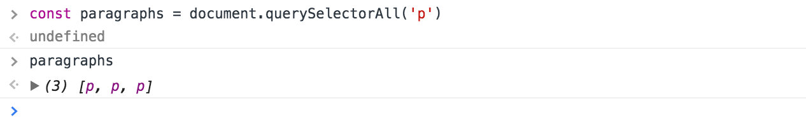

Selecting three paragraphs at once with `querySelectorAll`
querySelectorAll returns a NodeList. A NodeList is a list of nodes. An Element is a specific type of Node. (See the next lesson on nodes vs elements if you want more clarification).
Acting on each element
A NodeList is an array-like object—objects that look like arrays. Array-like objects have a length properties and has numbers as keys.
If you want to do something with each element in a NodeList, you need to loop through the NodeList. The code below adds a red class to each element in the NodeList.
const items = document.querySelectorAll('.item')
for (item of items) {
item.classList.add('red')
}
You can also use the forEach loop if you don’t want to use the for...of loop.
Note: NodeLists may not have the forEach method in older browsers. If you encounter this scenario, you can convert your NodeList into an Array with Array.from.
const elementArray = Array.from(NodeList)
Getting a specific Element from a list of NodeList
You can get items through NodeLists as if you’re getting items through arrays. To get the first item, you use an index of 0; to get the second item, you use an index of 1, and so on.
Note: Do you see that we’re actually using the bracket notation to get items from objects? (Hint: NodeList is an array-like object, and array-like objects uses numbers as keys).
Alternate methods to select multiple elements
You may have heard of methods like getElementsByClassName and getElementsByTagName. You can use them if you wish to, but there’s no need for them most of the time.
They’re slightly quicker than querySelectorAll (but the speed difference is negligible most of the time), and they return live collections (live lists).
To get a more informed opinion, it may make sense to look at live vs non-live collections.
At this point, both liveCollection and staticCollection refer to the same thing – the three paragraphs.
If you add another paragraph through JavaScript sometime later, liveCollection will update itself and include the fourth paragraph. staticCollection, on the other hand, will remain as the three paragraphs you selected initially.
That’s the difference between live and non-live collections.
When to use Live Collections?
Live collections seem extremely helpful since it updates automatically whenever new elements are added or removed. But we don’t use live collections much because the use cases are quite limited.
The most obvious example is this. Let’s say you have a list of elements and you want to listen to each list item.
When you add event listeners, you may do something like this:
const listItems = document.getElementsByTagName('li')
for (const item of listItems) {
item.addEventListener('click', _ => { /* ... */})
}
Now let’s say you add another <li> into the HTML with JavaScript. (We’ll cover how in later module).
Since live collections get updated automatically, the event listeners should also be added to the new list item… right?
Unfortunately no.
listItems only contains three items when we run the for loop over it. So event listeners will only be added to these three elements existing elements. No event listeners will be added to new elements.
If you want to listen to all <li> elements, a better way is to use the event delegation pattern (explained in a later module) which looks something like this: